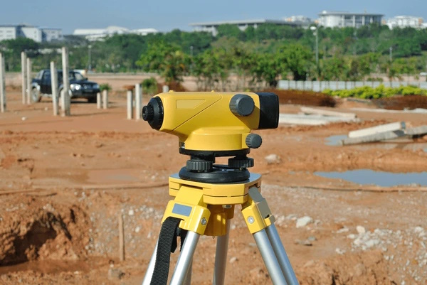

Surveying
Overview
Throughout our time in the Fleming Geographic Information Systems Application Specialist program we completed something known as Survey Camp. It's a one week accelerated course where we implement the skills and knowledge we gained from our theoretical studies into a real hands on activity with actual surveying equipment. This made us more comfortable with the equipment and created an advantage for us relative to other graduates with no equivalent experience. During survey camp, we received hands on experience with a total station and a surveying level. We utilized the former to complete a closed interior angle traverse survey and the latter to complete a closed leveling traverse.
Survey Camp
Survey Traverse Using a Total Station and a Leveling Traverse Using a Level
For the total station traverse, we competed an interior closed angle traverse with 12 survey stations using a total station and a prism rod. We completed the following process for each of the 12 survey stations. First, we set up the total station at the survey station by fastening the total station to the tripod, then leveling and lining up the tripod above a pre-placed nail, which showed the exact position we were meant to measure from. We then leveled the total station itself before double-checking both the tripod levels and the position over the nail. Next we proceeded to turn on the total station and take a reading of the interior angle between the previous survey station and the next survey station. We did this by reading the prism rod's location at each point, collecting both the interior angle between and the distance to both survey stations. Once the readings were recorded, we proceeded to the next station and repeated the process 11 more times.
For the leveling traverse, we used a stadia rod to measure heights above and below a known elevation at the designated points along the traverse. We began by setting up our tripod at a position where we could see the stadia rod when it was held at both the first and second point. Once the level was secured atop the tripod and the equipment had itself been leveled, we could take both the backsight and foresight measurements, which we then used to calculate both the height of the instrument and the elevation of the next point. We proceeded to do this for each of the designated points until we returned to our starting point. Then we completed our final calculations.
This exercise provided us with hands on experience using real surveying tools and gave us a substantial head start on learning the actual surveying procedures used by professionals in the field. While we are not yet surveying experts, we have received a valuable foundational knowledge of the field and with some additional experience, we will be able to provide high-quality services in this area.
